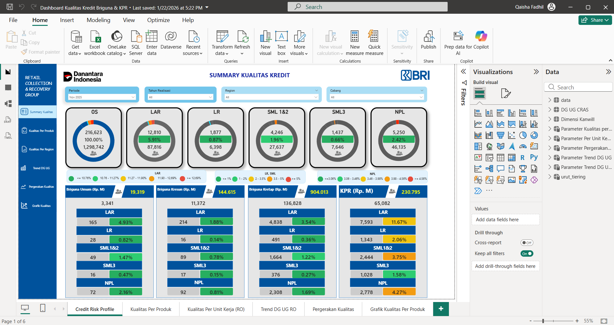
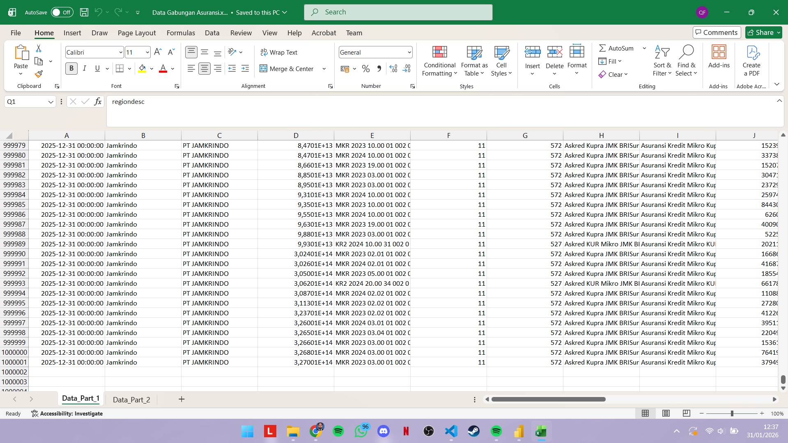
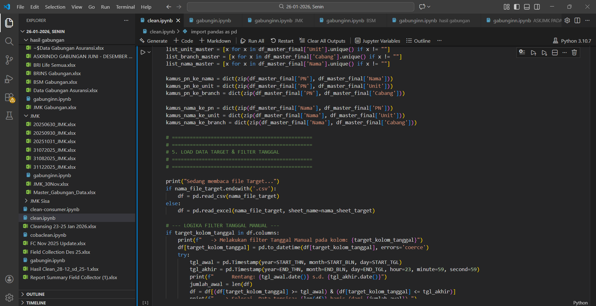
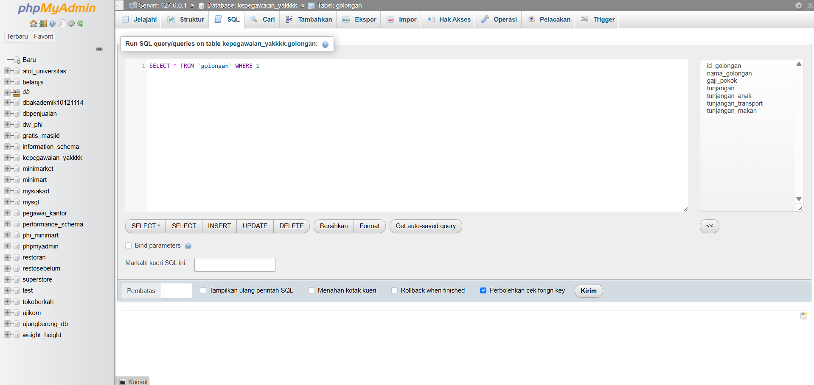

Education
University of Computer Indonesia
Faculty of Engineering & Computer Science | Bachelor of Informatics
GPA: 3.72 / 4.00
Thesis: MBTI Classification Based on X Data Using Random Forest
- Extracted and processed an imbalanced dataset of 11,650 text-based social media records for psychological profiling.
- Conducted rigorous data preprocessing, including case folding, text cleaning, slang normalization, and feature extraction utilizing Raw-TF.
- Built and optimized a Random Forest classifier utilizing RandomizedSearchCV for hyperparameter tuning and evaluated resampling techniques (SMOTE, ROSE, RUS) to handle imbalanced data.
Certifications & Achievements
Associate Data Scientist
BNSP (Badan Nasional Sertifikasi Profesi)
March 2025
AI & Cybersecurity Certification
IBM SkillsBuild MSIB
July 2024
Machine Learning & Deep Learning
IBM Developer Skills Network (Python & TensorFlow)
May 2024
Language Proficiencies
TOEFL Score: 593 | JLPT N5 (Passed)
2025 - 2026
Professional Experience
Data Analyst (Retail Collection & Recovery Group)
PT Bank Rakyat Indonesia (Persero) Tbk
- ▹ Spearheaded the development and maintenance of the division’s first Credit Risk Analysis System (CRAS) and Power BI dashboards to monitor ~40 million credit records across 18 Regional Offices, 454 Branch Offices, and 933 KCPs utilizing advanced DAX calculations for automated visual reporting.
- ▹ Conducted deep-dive data cleansing and complex transformations on ~5 million raw field collection records using SQL, ensuring 100% data integrity for strategic business audits.
- ▹ Upgraded the Credit Risk Analysis System (CRAS) and operational reporting from monthly to daily cycles, significantly enhancing real-time portfolio monitoring.
- ▹ Orchestrated end-to-end daily data pipelines by extracting and processing massive credit datasets utilizing PySpark, Cloudera Machine Learning (CML), and SQL.
- ▹ Conducted rigorous data reconciliation and validation against primary sources (e.g., Cognos) to resolve cross-departmental discrepancies.
- ▹ Provided critical analytical support by executing complex ad-hoc data extractions and tailored analyses for cross-functional stakeholders.
Marketing Internship Program
PT. Terakorp Indonesia
- ▹ Evaluated 5+ key competitors through rigorous SWOT analysis and application demos, identifying critical market gaps.
- ▹ Developed and deployed the official teraMedikCE corporate profile website using HTML, CSS, JS, and PHP.
Technical Projects

Credit Risk Executive Dashboard
Designed and deployed an automated Power BI dashboard utilizing advanced DAX measures to translate complex recovery data into actionable executive-level visualizations.

Large-Scale Data Processing
Processed massive enterprise datasets (millions of records) utilizing PySpark and Python pipelines. Executed rigorous data reconciliation to ensure a 100% accurate single source of truth.

Machine Learning Classification
Developed a predictive NLP model using Scikit-Learn (Random Forest) to classify text data. Implemented SMOTE to handle extreme class imbalances during training.

Complex SQL Query Optimization
Executed robust SQL queries (Impala, Hive, PostgreSQL) to extract and aggregate critical portfolio data across distributed databases for analytical reporting.
Organizational Experience
Badminton Club – University of Computer Indonesia
Staff
- Managed administrative operations and coordinated end-to-end logistics for club activities, ensuring the smooth execution of weekly training sessions.
- Maintained accurate databases for member attendance (50+ active members), equipment inventory, and internal documentation.
- Supported the planning and execution of university-level sports tournaments, collaborating with cross-functional teams.